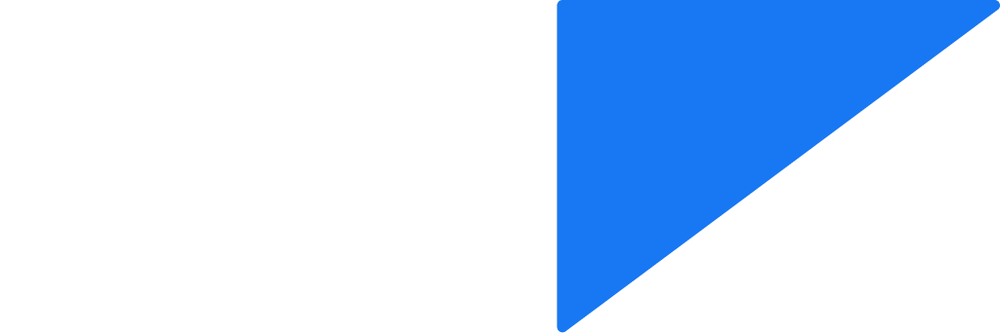
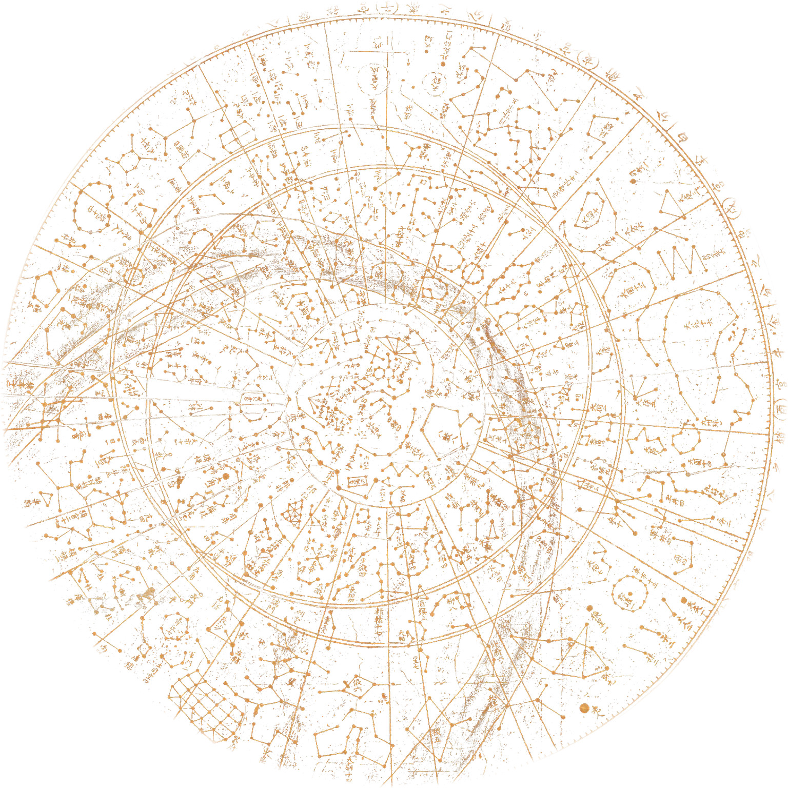

모두의 창업 2기 선정사업설치도 가입도 없이 브라우저에서 엽니다. 오늘 밤 내가 선 자리의 하늘에서 시작해, 그 하늘 속 천체까지 날아가고, 마지막엔 중력을 직접 다뤄 봅니다. 그리고 화면 밖에서는, 가까운 동네에서 함께 올려다봅니다.
근삿값입니다. 항목을 누르면 앱에서 그 시각, 그 방향의 하늘이 열립니다.
관측 프로그램과 우주 비행, 중력 실험을 따로 켤 필요가 없습니다. 세 모드가 같은 하늘과 같은 시각, 같은 데이터를 공유하기 때문에, 보던 장면이 끊기지 않고 다음 단계로 넘어갑니다.
지금 이 자리, 이 시각의 하늘. 별자리와 행성, 위성의 지나감을 실제 산 능선 위에서 봅니다.
하늘의 점을 골라 그쪽으로 날아갑니다. 행성의 표면, 태양계 바깥, 국부은하군까지.
행성의 질량과 대기를 바꾸고 블랙홀을 놓아 봅니다. 궤도가 어떻게 변하는지 눈으로 확인합니다.

서양 88 별자리 대신 천상열차분야지도의 별자리로 하늘을 바꿀 수 있습니다. 용어는 처음 나올 때 한글과 영문을 함께 적고, 문장은 짧은 존댓말로 씁니다.
누르면 앱을 이 페이지 안에 불러옵니다